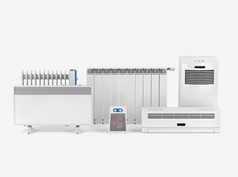

1.
녹내장은 완치가 되는 병이 아니라 당뇨나 고혈압처럼
지속적으로 관리하는 병입니다.
원인 및 상태에 따라 적절한 치료법을 선택하는데 많은 경우
안압을 하강시키는 데 초점을 맞추게 됩니다.
2. 녹내장의 치료 목적은 더 이상 시신경 손상이 진행되지 않도록 하는 것입니다.
녹내장의 치료방법
약물 치료
레이저 치료
수술적 치료
녹내장은 다양한 치료방법으로 시신경의 장애를 최소화하는 것이 목적이며
상태에 따라 약물, 레이저, 수술 등의 치료가 진행됩니다.
약물 치료 방법
녹내장은 약물을 치료로 안압을 떨어뜨리는
치료가
먼저 진행
됩니다.
레이저 치료 방법
홍채 절개술은
급성 폐쇄각 녹내장인 경우 홍채에 구멍을 만들어 방수가
정상적인 기능을 할 수 있도록 하는 레이저 치료입니다.
홍채를 레이저로 조사
홍채절개술을 통해 방수 유출 촉진
레이저 홍채절개술은 눈 속 방수가 원활하게 흐르는배출로인 우각이 좁아져
나타나는
급성 폐쇄각 녹내장에서
많이 사용하는 방법입니다. 방수 배출로가 막히게 되면 안압이 상승하면서 시신경이 손상되어
시야가 점차
좁아지게 됩니다. 이 때 레이저로 홍채에 구멍을 내어 방수의 흐름을
원활하게 만드는 레이저 홍채절개술을
시행할 수 있습니다.
수술적 치료 방법
앞선 치료에 의해서도
시신경 손상이 진행될 경우 수술적 치료 방법을 고려합니다.
01섬유주절제술
전방과 결막 아래 공간에 방수를 배출할 수 있는 출구를 만드는 수술
섬유주절세술은 전방과 결막 아래 공간 사이에 방수가 빠져나갈 수
있는
출구를 만들어 안압을 떨어뜨리는 수술입니다. 수술기법이
발달하면서
합병증을 최소화 할 수 있으며 수술 후에도 레이저로 전방에서
방수가
빠져나가는 정도를 조절해 수술의 성공률이 높습니다.
02방수유출장치삽입술
방수유출장치 관을 삽입하여 전방내의 방수가 빠져 나갈 수 있도록
하는 수술
포도막염, 신생혈관녹내장으로 인한 2차 녹내장, 외상 후에
발생한
녹내장 그리고 재수술을 하는 경우 방수유출장치를 통해 수술이
진행
됩니다. 방수 유출장치는 관을 삽입하여 전방내의 방수를 결막
아래
공간을 빠져나가게 만들어 안압을 유지합니다.
에스안과의 안전한 수술시스템
UPS 무정전 시스템
정전 등 천재지변의 상황이 발생해도
전원을 안전하게 공급할 수 있는
장치를 보유

365일 항온 학습
수술실은 가장 적합한 온도인 섭씨
20도와 최적 습도 40%를
항상 일정하게 유지
완벽한 멸균 시스템
수술실은 항상 완벽한
멸균관리를 진행하며
청결하게 관리
시야가 좁아졌다 느끼면 이미 늦었습니다
조기검진을 통해서 관리하는 것이 중요합니다
녹내장 조기 검사 대상
· 40세 이후 중장년층일 경우 · 고도근시가 있는 경우 · 건강검진 상 안압이 높은 경우 · 가족 중에 녹내장 환자가 있는 경우 · 당뇨, 고혈압, 동맥경화 등 혈관질환이
있는 경우 · 재발성 포도막염이 있는 경우 · 편두통이 지속적으로 반복되는 경우